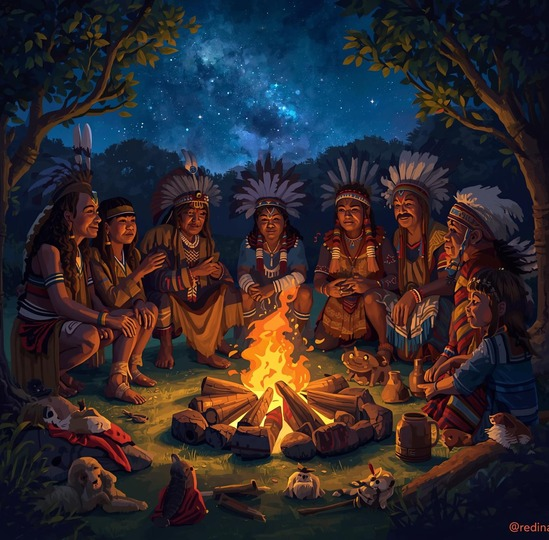
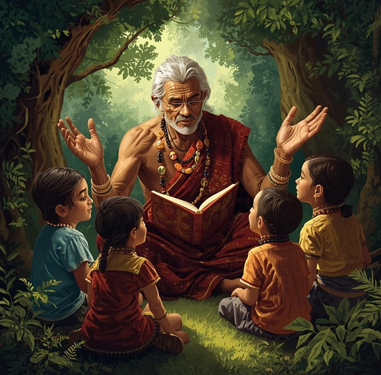
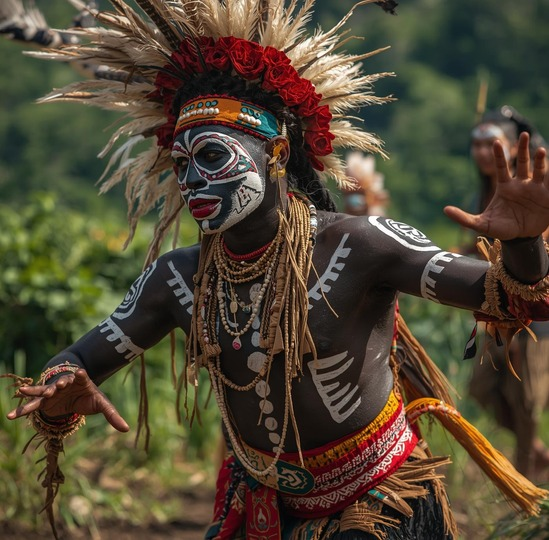
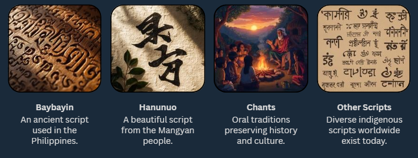

Indigenous Storytelling Traditions
Oral traditions preserve culture and knowledge.
Oral traditions have long been the foundation of Indigenous cultures, serving as powerful tools for preserving and transmitting knowledge, values, and identity across generations. Through storytelling, elders and community members pass down histories, moral lessons, spiritual beliefs, and collective experiences that define their way of life. These stories are not merely forms of entertainment—they are living archives that reflect a community’s worldview, environment, and relationship with nature. Indigenous storytelling traditions also foster a deep sense of belonging and continuity, ensuring that younger generations understand and honor their roots. In the modern era, efforts to record and share these oral narratives through digital media, podcasts, and online archives have helped safeguard them from fading into obscurity. By blending traditional storytelling with technology, we can keep these voices alive—celebrating the resilience, creativity, and wisdom embedded in Indigenous heritage.
  Traditional Scripts
Indigenous oral traditions and storytelling played a crucial role in preserving and transmitting knowledge across generations. Through these narratives, communities shared lessons, values, and histories that shaped their collective identity and understanding of the world. Long before the arrival of modern information systems, these oral traditions served as living archives—dynamic and adaptive methods of knowledge preservation. Early writing systems such as Baybayin and Hanunuo further advanced this process by providing a means to record and communicate information visually. These scripts were more than just tools for writing; they represented the intellectual and cultural sophistication of early Filipino societies. By encoding language and thought into written symbols, they allowed communities to document agreements, poetry, genealogies, and spiritual beliefs, ensuring that cultural wisdom could transcend time and geography. In many ways, scripts like Baybayin can be viewed as the earliest forms of information systems in the Philippines. They not only facilitated communication but also acted as vessels of identity and continuity, preserving the essence of indigenous culture. Today, as modern technology continues to evolve, these ancient systems stand as reminders of the deep historical roots of communication and information management—bridging the wisdom of the past with the innovations of the present.
Language Learning Innovations
Modern tools for preserving endangered languages
Modern technology has opened new pathways for preserving and revitalizing endangered languages. Through the use of digital learning platforms, mobile applications, and interactive software, communities can now access practical tools that make language learning engaging and accessible to people of all ages. These innovations go beyond simple translation—they incorporate pronunciation guides, audio recordings, and cultural context to ensure that learners experience the language authentically and meaningfully.
Language learning innovations also empower Indigenous communities to take part in the preservation of their linguistic heritage. By developing localized apps, online dictionaries, and virtual classrooms, these tools create opportunities for collaboration between elders, educators, and young learners. The integration of modern IT solutions with traditional teaching methods strengthens cultural identity, bridges generational gaps, and ensures that endangered languages continue to thrive in the digital age. Ultimately, these innovations transform language preservation into a living, interactive process that celebrates diversity and keeps cultural knowledge alive for future generations.
Contemporary Relevance
Empowering Language Revitalization and Cultural Continuity
AI Speech Recognition
Advanced Artificial Intelligence (AI) speech recognition technology plays a transformative role in preserving and revitalizing Indigenous languages. By enabling precise transcription and interpretation of spoken words, it helps capture the authentic sounds, tones, and nuances unique to each language. This innovation not only facilitates effective communication and learning but also serves as a bridge connecting traditional oral knowledge with modern digital systems. Through AI-powered transcription, stories, songs, and oral histories—once passed down solely through spoken tradition—can now be documented, studied, and shared globally. In doing so, AI becomes a vital tool in sustaining cultural identity, ensuring that Indigenous voices continue to be heard and valued in today’s digital age.
IT Innovations
Innovations in Information Technology (IT) such as language learning applications, interactive digital archives, and virtual reality experiences are redefining how Indigenous cultures are preserved and taught. These digital tools provide accessible, engaging platforms for both Indigenous and non-Indigenous learners to explore endangered languages and cultural practices. Mobile apps and online resources make learning possible anytime and anywhere, while digital repositories ensure that linguistic and cultural data are safely stored for future generations. By merging technology with tradition, these innovations empower communities to actively participate in cultural preservation and education—creating a sustainable, connected, and inclusive approach to safeguarding the Philippines’ diverse linguistic and cultural heritage.
The Bantayog Project
Empowering Language Revitalization
The Bantayog Digital Language Project is a groundbreaking initiative that harnesses the power of modern technology to safeguard the Philippines’ rich linguistic heritage. It focuses on archiving and revitalizing endangered Philippine languages, ensuring that these unique forms of expression are not lost to time. By integrating traditional knowledge systems with advanced digital tools, the project creates an innovative platform that preserves not only words and grammar but also the cultural meanings, stories, and worldviews embedded within each language. Through digital documentation, interactive archives, and educational resources, the Bantayog Project empowers communities to reconnect with their linguistic roots while making these materials accessible to future generations. This fusion of indigenous wisdom and technological advancement highlights the importance of language as a living embodiment of identity, history, and collective memory. Ultimately, the project serves as a digital monument to cultural resilience, reinforcing the idea that preserving language is vital to nurturing national identity and sustaining the diverse cultural fabric of the Philippines.
Nation-Building Integration
Strengthening Cultural Identity through Technology
Cultural Heritage
Strengthening national identity begins with acknowledging, preserving, and celebrating the richness of our cultural heritage. By embracing technology, we can ensure that traditional practices, ancestral knowledge, and artistic expressions are not forgotten but instead revitalized for future generations. Digital tools such as online archives, virtual museums, and multimedia storytelling platforms make it possible to document and share indigenous customs, languages, and craftsmanship with a global audience. This fusion of heritage and innovation not only protects ancient wisdom but also inspires pride and unity among Filipinos, reinforcing the deep connection between the past, present, and future.
National Development
Integrating Indigenous Science and Technology (IST) into national development plays a vital role in building a more inclusive and sustainable society. Indigenous knowledge systems, grounded in harmony with nature and community cooperation, offer valuable insights that complement modern technological advancements. By recognizing and applying these traditional innovations in fields such as agriculture, environmental management, and health, communities are empowered to take part in nation-building efforts. This approach not only preserves cultural heritage but also ensures that progress is rooted in Filipino identity—promoting development that is both equitable and deeply connected to our cultural and ecological foundations.